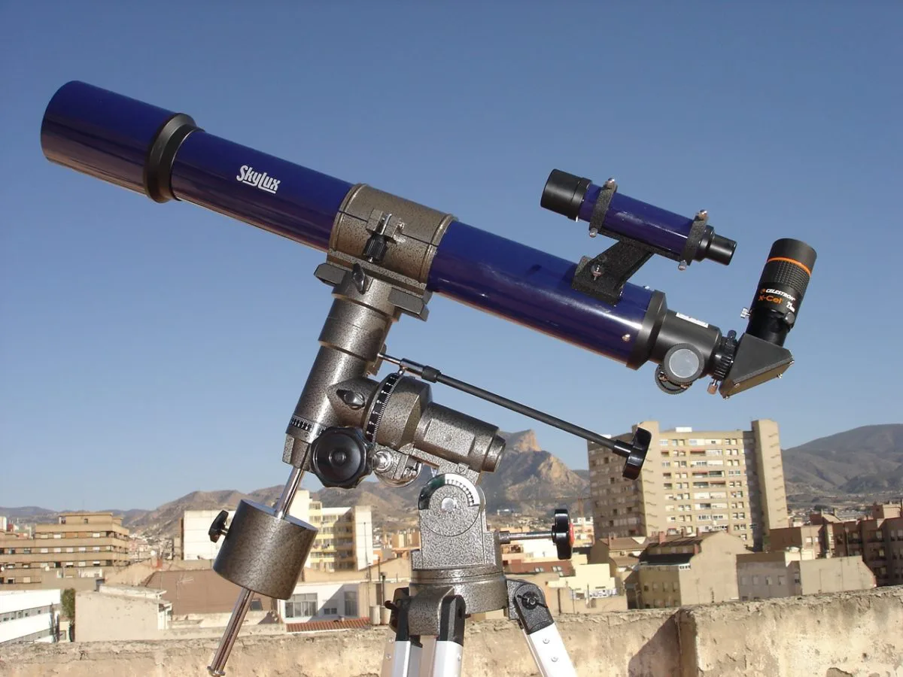

Un telescopio es un instrumento que permite observar objetos lejanos, como planetas, estrellas o galaxias.
Usa lentes para enfocar la luz. Es el tipo de telescopio más antiguo, inventado en el siglo XVII.
Utiliza espejos en lugar de lentes. Fue inventado por Isaac Newton y permite construir telescopios más grandes.
Combina lentes y espejos. Son compactos y ofrecen buena calidad de imagen, ideales para uso aficionado.
Operan fuera de la atmósfera terrestre. El más famoso es el Telescopio Espacial Hubble.
